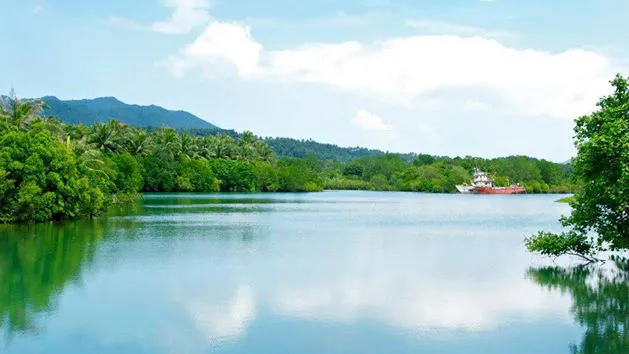
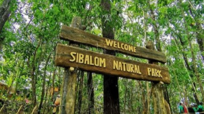
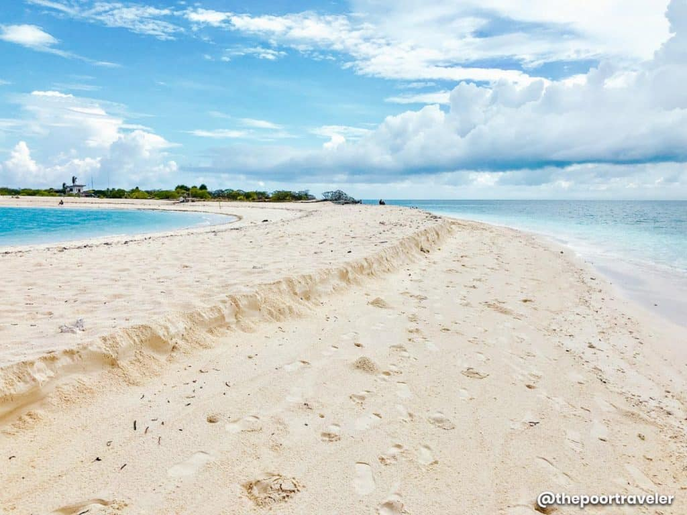
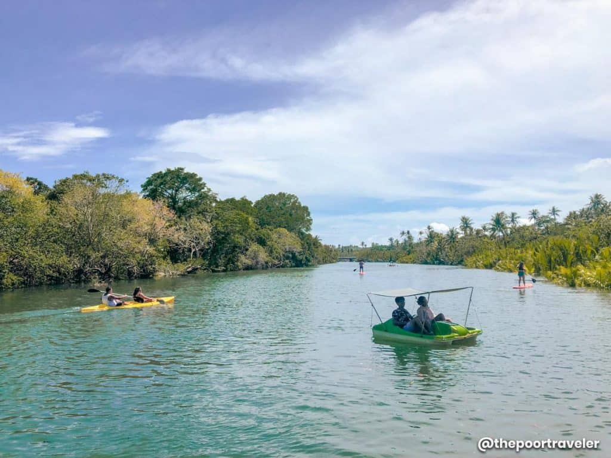

Tourism & Travel Updates
🌱 Eco-Tourism Growth
Antique is focusing on sustainable tourism, making it a top eco-travel destination:
|
 |

|
 |
|
Clean rivers and protected marine areas |
Community-based tourism programs |
Environmental fees to maintain natural sites |
NEW & RISING DESTINATIONS
Tourism continues to grow with more people discovering:

|
 |
 |
|
Malalison Island |
Seco Island |
Naranjo Water Park |
|
|
|
INCREASING TOURISM INTEREST
More local and international tourists are visiting Antique for eco-adventures
Activities like river tubing and kawa baths are becoming major attractions.
Adventure and wellness experiences in Antique are steadily growing in popularity, especially activities such as river tubing and kawa baths. River tubing allows visitors to float along calm rivers while enjoying the province’s lush natural scenery, offering both excitement and relaxation. Meanwhile, kawa baths—where guests soak in large cauldrons filled with warm water and herbs—provide a unique and soothing experience rooted in local tradition. These activities not only showcase Antique’s natural beauty but also give tourists memorable, one-of-a-kind experiences.
The province is gaining recognition as a peaceful alternative to crowded destinations.
As more travelers seek quiet and less commercialized places, Antique is becoming known as a peaceful alternative to popular tourist spots in the Philippines. Unlike crowded destinations, the province offers serene beaches, unspoiled landscapes, and a slower pace of life that allows visitors to truly relax and connect with nature. Its calm environment, welcoming communities, and authentic cultural experiences make Antique an ideal destination for those looking to escape busy city life and enjoy a more tranquil and meaningful travel experience.
SEASONAL ACTIVITIES TO WATCH
Make sure to enjoy these activities during the correct season!
| Season | Activities | Suggested Location |
|---|---|---|
| ☀️ Summer | Island hopping, beach trips, snorkeling | Mararison Island |
| 🌧️ Rainy Season | Best time for river tubing & rafting | Tuno, Tibiao |
| 🎄 December | Festivals like Binirayan | San Jose de Buenavista |
| 🌿 All Year | Hiking, waterfalls, kawa bath | Mt. Madja-as |
📌 QUICK HIGHLIGHTS
✨ Antique’s Best Highlights & Dates
| Category | Destination / Event | Best Time / Date |
|---|---|---|
| 🎉 Major Event | Binirayan Festival | December 15 – 30 |
| 🌊 Top Activity | River Tubing in Tibiao | June – October (Rainy) |
| ♨️ Unique Experience | Kawa Hot Bath | All Year (Best at Sunset) |
| 💦 Nature Spot | Bugtong Bato Falls | November – May (Dry) |
| 🏝️ Trending Destination | Malalison Island | March – May (Summer) |